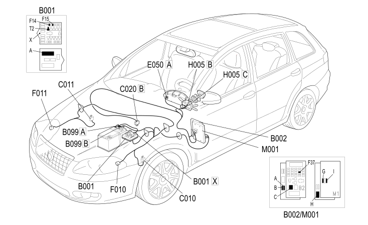

E2012 HIGH BEAMS COMPONENT LOCATION
- Path
- Electrical equipment > 1 ELECTRICAL FUNCTIONS > E20 EXTERIOR LIGHTING > E2012 MAIN BEAM HEADLAMPS > E2012 HIGH BEAMS COMPONENT LOCATION
- Kind
- topic
- Applies to
- all engines; all production periods; only with equipment: XENON GAS HEADLAMPS
- Interactive page
- https://sloeber94.github.io/elrnDB-fCrm/en/#/194001313
Applies to: all engines; all production periods; only with equipment: XENON GAS HEADLAMPS

Component code | Description | Reference to the assembly |
|---|---|---|
ENGINE COMPARTMENT JUNCTION UNIT | ||
JUNCTION UNIT UNDER DASHBOARD | ||
MAXI FUSE BOX ON BATTERY | ||
LEFT FRONT EARTH | ||
RIGHT FRONT EARTH | ||
PASSENGER SIDE DASHBOARD EARTH | ||
INSTRUMENT PANEL | ||
LEFT HEADLAMP | ||
RIGHT HEADLAMP | ||
STEERING COLUMN SWITCH UNIT | ||
BODY COMPUTER |
Topics linked from this page (16)
- 5505A MULTI-FUNCTION COMPONENTS
- 5530B BATTERY AND LEADS
- 5540B HEADLAMPS
- 5550A STALK UNIT
- 5560B ANALOGUE CONTROL PANEL
- B001 ENGINE COMPARTMENT JUNCTION UNIT
- B002 JUNCTION UNIT UNDER DASHBOARD
- B099 MAXI FUSE BOX ON BATTERY
- C010 LEFT FRONT EARTH
- C011 RIGHT FRONT EARTH
- C020 PASSENGER SIDE DASHBOARD EARTH
- E050 INSTRUMENT PANEL
- F010 LEFT HEADLAMP
- F011 RIGHT HEADLAMP
- H005 STEERING COLUMN SWITCH UNIT
- M001 BODY COMPUTER